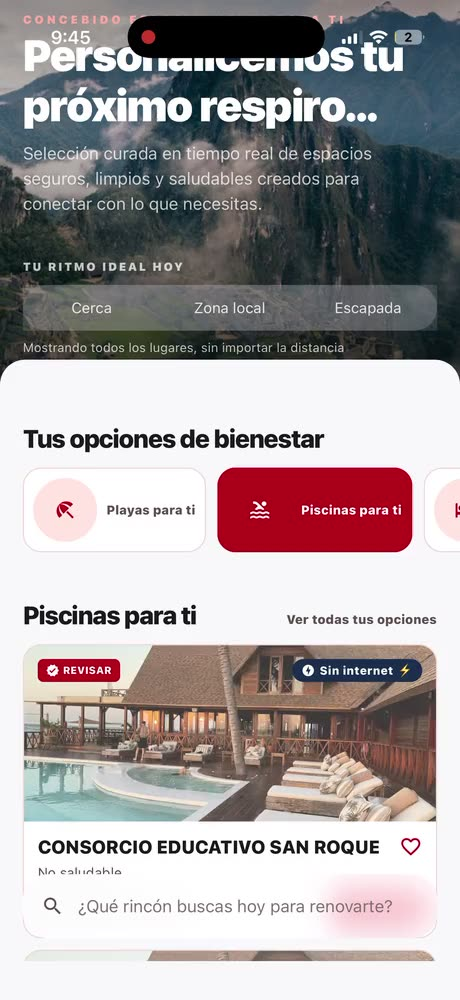
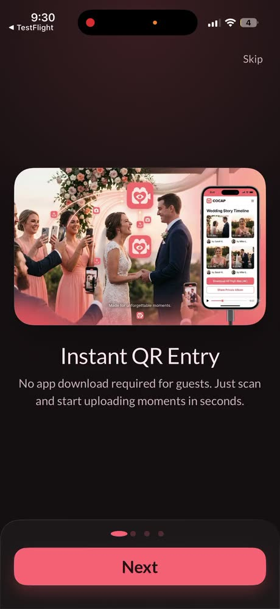

miMarket
A backend-for-frontend on Node.js and AWS, Python Lambdas behind it, and a React Native client rebuilt offline-first on WatermelonDB so the field keeps working where the signal does not.





Open to Senior and Staff roles · Canada, USA, Europe
Senior Software Engineer and Mobile Architect. Eight years building the thing in your hand, and everything underneath it.
A backend-for-frontend on Node.js and AWS, Python Lambdas behind it, and a React Native client rebuilt offline-first on WatermelonDB so the field keeps working where the signal does not.
One React Native and TheoPlayer video player across phones, the web and smart TVs. Recoil retired for Jotai, native modules moved to Expo inside a Turborepo, bridge traffic cut until the thing started fast.
Millions of viewers, mobile, web and CTV
Biometric authentication and encrypted transaction workflows, with reusable Swift and Kotlin modules for secure storage and core banking.
100,000+ people banking on it · 90%+ automated coverage held on a transaction-critical codebase
A legacy web platform migrated to React Native and Expo, shipping one codebase to iOS, Android and Huawei.
1M+ downloads
 And before all of it, medical reporting and annotation systems at Gruppo GPI, Italy and Germany, 2018 to 2019. 3,000+ hospitals and clinics across Europe run them.
And before all of it, medical reporting and annotation systems at Gruppo GPI, Italy and Germany, 2018 to 2019. 3,000+ hospitals and clinics across Europe run them.
Keep going.
Interface down to the Lambda, and the agents that now help work the tickets. Reviewed and signed off by the engineer accountable for them.
Thirteen of them. Ride hailing, vehicle records, a résumé scorer, a beach-safety guide, a React drill app, a live-event film maker, a personal-safety network, a live-stream AI assistant. Nights and weekends, shipped.
Currently Senior Full Stack Software Engineer at The Coca-Cola Company. Open to visa sponsorship and employer relocation.
Email Binni